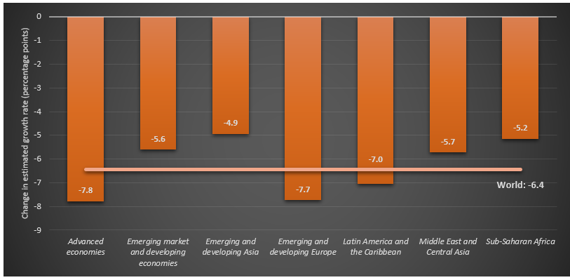
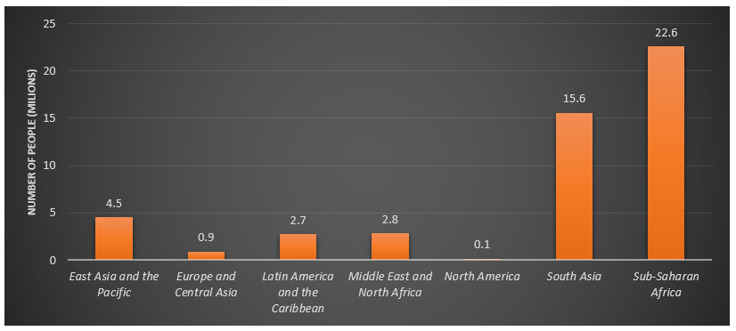
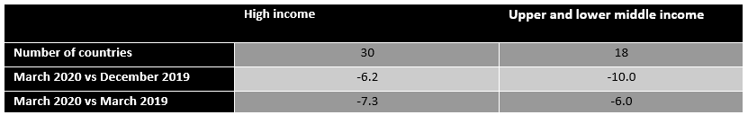
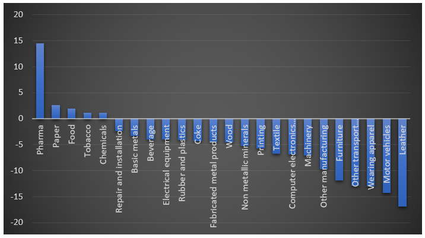
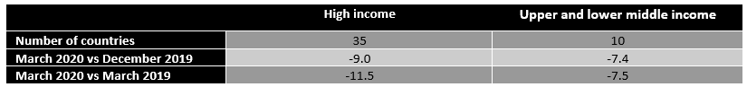

Covid-19: the economic impact
Here is a selection of charts to help you understand the economic impact of the virus so far. Global shares take a hit. Big shifts in stock markets.
Introduction
There is still a great deal of uncertainty about the impacts of COVID-19 and governments’ possible responses to limit the pandemic’s human and economic effects. The current policy debate centres around the following key questions:
- What does the ‘typical’ path of economic performance and recovery of countries that have experienced a health and economic crisis look like?
- Which countries and regions are most affected by the COVID-19 crisis?
- What are the most effective policy responses to mitigate the impacts of the crisis and to accelerate the recovery process?
To address the first question, Ma et al. (2020) recently conducted an econometric analysis to examine the paths of countries’ growth rates following a health crisis. (The crises they analyze include the 1968 Flu (aka Hong Kong Flu), SARS (2003), H1N1 (2009), MERS (2012), Ebola (2014), and Zika (2016). Authors acknowledge that COVID – 19 is more widespread than the average crisis in the sample and that the estimates are highly likely to be a lower bound for the effect of COVID-19 globally.) On average, GDP growth in affected countries is about 2.4% below that of unaffected countries. The GDP growth reduction is followed by a quick recovery with affected countries enjoying a one percentage point higher growth rate than unaffected countries in the year following the crisis. After an initial upturn during that first year, however, the economic recovery may stall and GDP growth may persistently remain lower in affected countries compared to unaffected countries.
Ma et al. (2020) also find that the decline in GDP growth is, on average, less severe in low-income countries experiencing a health crisis than it is in advanced economies experiencing a health crisis and is not statistically more severe in affected low income countries from unaffected low income countries. Moreover, they find a robust impact of fiscal policy stimulus on recovery performance. The question therefore arises whether COVID-19 might be less harrowing for developing countries than it has been for developed ones.
The socio-economic impacts of the COVID-19 crisis
Previous issues of the bulletin highlighted gloomy forecasts for key economic and social variables:
Global GDP growth: the projections for 2020 range between -8.8 per cent (WTO) and 1 per cent (UNDESA, optimistic scenario) as shown in Figure 1. Among these projections, the International Monetary Fund’s (IMF) is the main reference point for assessing the economic impact of COVID-19. Accordingly, global growth will shrink by -4.2 per cent, a difference of 7 percentage points compared to the projections published before the outbreak of the crisis (IMF 2020).
Figure 1: World growth outlook: latest projections by different organizations

Note: The projections are based on market exchange rates and were carried out on the following dates: IMF = 14 April; Oxford Economics = 14 April; UNDESA = 1 April; WTO = 9 April. UNDESA and WTO distinguish between two possible scenarios on the pandemic’s severity. The projections carried out by the IMF World Economic Outlook (WEO) 2019 (blue line) are used as the baseline for comparison.
Source: UNIDO elaboration based on Oxford Economics (2020), IMF (2019, 2020a), UNDESA (2020) and WTO (2020).
While advanced economies are expected to be hit hardest by the COVID-19 crisis, two emerging regions will also suffer above-average declines: developing Europe and Latin America and the Caribbean (Figure 2).
Figure 2: Regional differences of GDP growth rates projected for 2020 in the IMF’s WEO Oct 2019 and Apr 2020
Source: UNIDO elaboration based on IMF.
Global trade and investment: world trade volumes are expected to drop between -32 per cent (WTO, pessimistic scenario) and -9 per cent (IMF) in 2020, as shown in Figure 3. Moreover, capital flows are now being diverted towards advanced economies.
Figure 3: Annual change in the volume of global trade: latest projections by different organizations

Note: Change in trade is calculated as the average in the change of exports and imports. WTO projections include only merchandise trade (excluding services). IMF figures include goods and services. The projections were carried out on the following dates: IMF = 14 April; WTO = 9 April. The projections conducted by the IMF in its World Economic Outlook (WEO) 2019 (green line) are used as the baseline for comparison.
Source: UNIDO elaboration based on IMF (2019, 2020a) and WTO (2020).
Global poverty: Assuming a drop in global GDP based on the IMF estimate, the expected increase in the share of people living in extreme poverty will range from 0.8 per cent to 1.5 percentage points. This is equivalent to an increase of between 50 million to 70 million people compared with the original estimates for 2020. Other figures using different GDP growth projections and poverty baselines indicate an increase of nearly 420 million additional people living in extreme poverty (Figure 4).
Figure 4: World extreme poverty headcount ratio: latest projections by different organizations

Note: The projections were carried out on the following dates: Gerszon et al. [World Bank] = 20 April; Sumner et al. [UNU-WIDER] = 8 April. The pre-COVID-19 forecast of Gerszon et al. (yellow line) is used as the baseline for comparison. The estimates by Sumner et al. are adjusted to match the baseline of Gerszon et al. and only the “good” scenario is presented (5% drop in global GDP).
Source: UNIDO elaboration based on Gernson et al. (2020) and Sumner et al. (2020).
Global CO2 emissions: As the COVID-19 crisis continues to unfold, energy demand and CO2 emission continue to fall (Evans 2020).
New evidence I: Human development on course to decline for the first time since 1990
The emerging picture shows a grave deterioration of socio-economic development. This is well reflected in the latest projections of the Human Development Index for 2020. According to UNDP Administrator Achim Steiner “The world has seen many crises over the past 30 years, including the Global Financial Crisis of 2007-09. Each has hit human development hard but, overall, development gains accrued globally year-on-year. COVID-19 – with its triple hit to health, education, and income – may change this trend.” (UNDP, 2020).
New evidence II: Actual data for the first quarter of 2020 confirm trade projections
Data for the first quarter of 2020 suggest that the COVID-19 pandemic has reduced global trade values by 3 per cent. This downturn is expected to accelerate in the second quarter of 2020, with world trade projected to record a quarter-on-quarter decline of 27 per cent, according to the latest UNCTAD assessment.
New evidence III: North America and Asia expected to suffer more from global trade decline
Nearly all regions are expected to suffer double-digit declines in trade volume, even in the most optimistic scenarios. In a regional comparison, as illustrated in Figure 5, North America and Asia are predicted to suffer the highest negative impacts on their export volumes (Figure 5).
Figure 5: Projected annual change in the volume of global trade, by region

New evidence IV: Unemployment rates are skyrocketing, with the Americas, Europe and Central Asia hit hardest
Unemployment rates are skyrocketing to unprecedented levels. The third edition of the ILO Monitor on COVID-19’s impact on labour contends that the share of workers affected by temporary workplace closures has decreased from 81 per cent to 68 per cent over the last two weeks. The losses in working hours, however, remain high. While working hours are expected to decrease in all regions, the ´Americas´ and ´Europe and Central Asia´ will be hit hardest with 12,4 per cent and 11,8 per cent, respectively (Figure 6).
Figure 6: Estimated effects on aggregate working hours by region

Source: UNIDO elaboration based on ILO (2020).
New evidence V: Sub-Saharan Africa severely affected by poverty
As Figure 7 illustrates, the regional distribution of the expected increase in extreme poverty is heavily skewed towards sub-Saharan Africa and South Asia, with nearly 50 per cent of those pushed below the poverty line living in sub-Saharan Africa. The UN Economic Commission for Africa arrives at a similar conclusion, where a projected GDP contraction of -2.6 per cent in the worst case could deprive 19 million people of their livelihoods and, in the context of weak social protection programmes in Africa, push up to an additional 29 million people into poverty.
Figure 7: Projected increase in the number of people below the US$ 1.90 PPP poverty line as a result of COVID-19, by region
Source: UNIDO elaboration based on (Gerszon Mahler et al., 2020).
The impact of COVID on industrial production and trade
New evidence based on UNIDO’s Industrial Production Index (IIP) dataset provides a preliminary picture of the impact of COVID 19 so far (March 2020) on the manufacturing sectors of 48 countries. Far from being exhaustive, the data allow us to capture some initial trends (data are seasonally adjusted to take into account that countries produce different volumes of goods throughout different periods of the year). The sample of 48 countries comprises 30 high-income countries, 15 upper middle-income countries and three lower middle-income countries in the Americas, Europe and Asia. (For full information on the countries included, click here.)
Majority of countries hit hard by the crisis
When comparing data for the periods March 2020 vs December 2019 (pre-crisis) and March 2020 vs March 2019 (year-over-year approach), the majority of countries considered (77 per cent and 72 per cent, respectively) registered a negative IIP growth. The average negative growth rates across the 48 countries are -4.8 per cent and -4.6 per cent, respectively. As with other projections presented in this bulletin, the impact is particularly severe in Europe and in the Americas, while its effect is weaker in Russia and Asia (Table 1).
Table 1: Average change in Index of Industrial Production (IIP) across world regions

Source: UNIDO Statistics Portal
Lower and upper middle-income countries severely affected
When we conduct the same exercise and consider income levels, the evidence shows that the impact of COVID-19 is particularly acute in countries that make up the upper and lower middle-income country group (Table 2). The data, albeit not exhaustive, imply that the effects of the crisis could be particularly severe on this country group’s industrial production.
Table 2: Average change in Index of Industrial Production (IIP) across world regions by income level

Source: UNIDO Statistics Portal
We repeat the same exercise by weighting the reduction rate of the IIP and take the size of the economy, represented by manufacturing value added, into account. This is important to ensure that the reduction rates of small countries do not skew the calculated averages. The IIP’s average reduction rates (Table 3) are amplified by the fact that many countries with an extremely negative industrial performance are those that are the most industrialized (e.g. USA, China, and high-income European countries).
Table 3: Weighted average change in Index of Industrial Production (IIP) across world regions by income level
Source: UNIDO Statistics Portal
Note: Weights are calculated using manufacturing value added as included in the UNIDO INDSTAT database for the last available year when official data are available.
Leather, wearing apparel and motor vehicles are the losers, pharma and food are the winners
Based on the available data at sector level, we calculate the average reduction rate across countries by comparing March 2020 vs December 2019 and March 2020 vs March 2019. The overwhelming majority of manufacturing industries, according to both calculations, registered a downturn (Figures 8 and 9).
Pharmaceuticals, together with the food industry, emerge as clear winners of the crisis. Paper also achieved a positive average growth rate according to both calculations. The chemical and tobacco industries also had a positive growth rate compared to December 2019. Based on both calculations, leather, wearing apparel and motor vehicles are the losers. Data incorporate the wide heterogeneity across countries.
Figure 8: Average percentage change in IIP across countries calculated for each ISIC rev. 4 industry. March 2020 vs December 2019
Source: UNIDO Statistics Portal
Figure 9: Average change in IIP across countries calculated for each ISIC rev. 4 industry. March 2020 vs March 2019.

Source: UNIDO Statistics Portal
Q1 2020 severe impacts on trade of goods for high-income and upper and lower middle-income countries
Fresh data from the OECD on the export of goods suggest that trade for high-income and lower and upper middle-income countries has been severely affected by the crisis. (Non-OECD countries is a group of countries that includes Argentina, Brazil, China, Costa Rica, India, Indonesia, Russia, South Africa, Mexico and Turkey. The high-income group consists of the OECD high-income countries. For further details, see the OECD’s trade website.)The pre-crisis period for both March 2019 and December 2019 is used as a comparator (Table 4).
Table 4: Reduction in export of goods (%) for a sample of high-income and upper middle-income countries
Source: OECD
Policies and coping strategies
As the pandemic’s epicentre shifted—first from Asia to Europe, then to the Americas and the rest of the world—and as some countries have gradually started resuming economic activities, two interrelated issues have gained centre stage in the economic policy debate: (1) how to shape recovery plans to foster a more inclusive and sustainable post-crisis world; and (2) how to boost international support for developing countries to ensure their economic survival and to bolster their fragile healthcare systems, while sowing the seeds for a better future. Both of these issues have major implications for industrial development opportunities and policies.
Support for business survival is key to curb the pandemic’s immediate effects
Governments’ responses to the pandemic have focussed primarily on the immediate health emergency and its economic effects, thus seeking to safeguard the provision of healthcare and support for individuals, households and businesses. Yet there is a huge disparity across countries and regions in terms of their capacity to mobilize the necessary fiscal and financial resources. While countries such as Germany, the United States and the United Kingdom have allocated large amounts of funds to cushion the pandemic’s blow on their businesses (i.e. through subsidies, loans, guarantees, tax relief or deferral), access to credit in the developing world remains elusive, sometimes even regardless of firm size, according to a recent survey of UNECA and IEC on African businesses.
Effective support measures, accompanied by coordinated efforts, could help least developed countries ride out the storm
In light of the uneven government capacities to respond to the COVID-19 crisis, calls for the international community to coordinate efforts and provide effective support measures, especially for least developed countries (LDC), have increased. Given that such coordinated efforts have yet to materialize, businesses and governments in both developed and developing countries have been leading initiatives to mobilize scientific, technological and productive capacities towards critical goods. In the context of developing countries, however, such initiatives appear insufficient to contain the impacts of the pandemic and to provide the necessary supplies. In a recent policy brief, the UN Commission for Latin America and the Caribbean highlighted that the region is highly dependent on medical goods imports, with less than 4 per cent originating in the region itself. Insofar as four of the top five suppliers in the region have restricted their medical supply exports in response to COVID-19, Latin America and the Caribbean remain vulnerable. Nevertheless, public-private partnerships have developed in the region, providing evidence of the possibility to unite efforts towards a common goal and setting an important precedent for a medium- to long-term strategy to build resilient health industries.
While crucial for business resumption after the crisis, providing clear guidance on issues such as workers’ health and safety under high uncertainty is not trivial
As some economies are starting to reopen after economic lockdowns and are gradually resuming manufacturing activities, it is undisputable that workers’ health and safety guidelines are instrumental in preventing a second wave of contagion. During the early stages of the pandemic, governments’ responses differed in terms of stringency and clarity, as well as coordination capacity.
Innovation policies can foster recovery from COVID-19 effects on the economy
Many companies have been forced due to containment measures to develop new business models and ways to organize production to survive in the short term, and ensure long-term viability and growth. Such changes may eventually benefit from the support of science, technology and innovation (STI) policies through grants, credit and tax breaks, among other instruments. Yet as innovation features as one of the key drivers of economic growth, it is expected that STI policies should also contribute to fostering economic recovery in the medium- to long run by enabling economic restructuring, productive diversification and entry/repositioning in what is expected to be a changed landscape of global value chains once the pandemic has been controlled (Santiago et al. 2020).
Seizing the opportunity to strengthen local manufacturing post-crisis
In a recent opinion piece, Rodrik discusses the trends that will shape the global economy in the years to come. He identifies the rebalancing of state-market relations (with a greater presence of the former) and a rebalancing between hyper-globalization and national autonomy (to the benefit of the latter). In fact, some governments are already considering the windows of opportunity these trends might offer to strengthen and develop their local manufacturing capacities. The Indian government, for example, has announced a relief package for industry with an explicit view to achieving self-reliance while enhancing the country’s competitiveness in the global economy (Banerji, 2020).
Amidst fears that recovery plans could undermine the achievement of environmental goals, the debate on the greening of manufacturing intensifies
As documented in the past weeks, the halt in economic activities, while negatively affecting socio-economic conditions, has led to an improvement in the environment in terms of energy consumption and CO2 emissions. Surveys show that climate change and sustainability are key concerns among manufacturing workers, which suggests that they would welcome a shift towards greener practices in the post-crisis period and beyond.
Time for new growth models and industrial policies for developing countries?
Whether a consensus is beginning to evolve on the need to follow more inclusive and sustainable paths once the pandemic has been contained is not yet clear. In this vein, export-oriented industrialization may be a less viable vehicle for recovery from COVID-19 and for longer term development, which should compel developing countries to rethink their growth models and strategies. This means not only addressing emergencies, but also including policies aimed at expanding productive capacities, promoting economic diversification and technological upgrading, while ensuring social and environmental protection. For that to become a reality, however, global coordination is key.
Original release: “Coronavirus: the economic impact, released on 28 March 2020”.
First update: “The catchphrase may be uncertainty, but the losses are real, released on 20 April 2020” .
Second update: “Great uncertainty comes at a high cost and negative projections – but there’s some good news, released on 04 May 2020”.